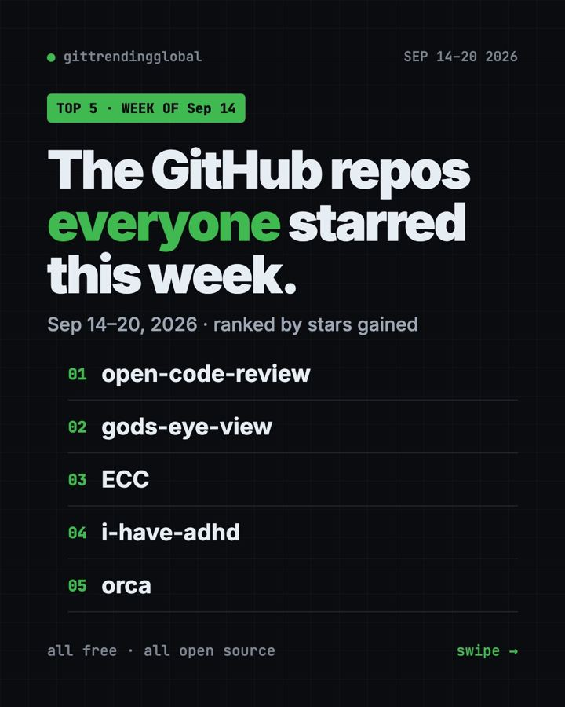

Home › Top repos › GitHub trending this week
Most Starred GitHub Repos Sept 14, 2026: Alibaba Leads
Most starred GitHub repos Sept 14 2026: Alibaba's Open Code Review, God's Eye View, ECC, i-have-adhd and Orca, with simple install steps for each.

Most starred GitHub repos Sept 14 2026 week: Alibaba's Open Code Review jumped straight to first with +15.0K stars. It's a free AI tool that checks code changes for mistakes, line by line. The live 3D globe God's Eye View stayed strong in second.
Three of last week's names are back, and one newcomer, Orca, lets you run several AI coding helpers side by side. Here's the rundown.
Key takeaways
- Open Code Review won Sep 14 to 20 with +15.0K stars. Alibaba says it used it inside the company for two years.
- God's Eye View added +10.2K, its second big week.
- ECC and i-have-adhd kept climbing.
- Orca is a desktop app for running many AI coding helpers at once, with a phone app to check on them.

The most starred GitHub repos Sept 14 2026, side by side
| Repo | What it does | Best for | Free? | Setup |
|---|---|---|---|---|
| Open Code Review | AI that reviews code changes | Developers, small teams | Yes (Apache-2.0), AI model may cost money | One command |
| God's Eye View | Live 3D globe of the world | Curious people, teachers | Yes (MIT) | One click |
| ECC | Skills and habits for AI coders | Heavy Claude Code users | Yes (MIT) | Guided setup |
| i-have-adhd | Short, answer-first AI replies | Skimmers | Yes (MIT) | Paste one line |
| Orca | Run many AI coders side by side | People who code with AI daily | Yes (MIT) | Download the app |
Star gains cover Sep 14 to 20, 2026. Totals were checked on GitHub on October 16, 2026.
1. Open Code Review: Alibaba's AI code checker, now free
Stars: +15.0K this week · about 47.3K total
What it is: A command-line tool that reviews your code changes with AI. The README says it began as Alibaba Group's internal review assistant and served tens of thousands of developers over two years. It reads what you changed, sends it to the AI model you choose, and leaves comments tied to exact lines.
Who it's for: Developers and small teams who want a second pair of eyes before they ship.
Everyday use: Before you publish an update to your app, run one command and get a list of likely bugs.
Install it: You need Node.js. Copy and paste this:
npm install -g @alibaba-group/open-code-review
Then pick your AI model with ocr config provider, go to your project folder and run ocr review.
Let Claude or Codex do it:
Install Open Code Review from github.com/alibaba/open-code-review, help me set up a model, then review my latest changes and explain the findings simply.
💡 Tip: The README claims it is more precise than a general agent like Claude Code on its own benchmark, using about 1/9 of the tokens. That's the maker's test, so try it on your own code.
See Open Code Review on GitHub
2. God's Eye View: still the coolest thing to show a friend
Stars: +10.2K this week · about 56.8K total
What it is: A browser-based 3D globe with live planes, ships, satellites, earthquakes and weather. It was number two the week before too.
Who it's for: Anyone who loves maps, travel or space.
Everyday use: Ask when the next satellite passes over your town.
Install it: One click with Pinokio: open God's Eye View there, click Install, then Start. Or in the terminal with Node.js 24 or 26:
git clone https://github.com/bilawalsidhu/gods-eye-view.git
cd gods-eye-view
npm ci
npm run doctor
npm run dev
Let Claude or Codex do it:
Install God's Eye View from github.com/bilawalsidhu/gods-eye-view, open it in my browser, and show me live satellites over my city.
3. ECC: the everything kit for AI coding
Stars: +6.3K this week · about 280.2K total
What it is: A large set of skills, memory and security rules for Claude Code, Codex and OpenCode. It turns a plain AI helper into one with ready-made routines.
Who it's for: People who live in Claude Code.
Everyday use: Run a ready-made planning command before a big change, instead of writing the prompt yourself.
Install it: You need Node.js 18+, Git and Claude Code 2.1+:
npx ecc-universal@2.2.3 setup
Let Claude or Codex do it:
Install ECC from github.com/affaan-m/ECC using its guided setup, explain each choice, and confirm it shows in /plugin list.
Step-by-step help is in our ECC guide.

4. i-have-adhd: shorter AI answers
Stars: +5.6K this week · about 57.3K total
What it is: A skill that makes AI helpers lead with the answer, number the steps and skip the filler. Last week's winner.
Who it's for: Anyone who skims.
Everyday use: Get "edit this file, line 42" instead of a lecture.
Install it: In Claude Code, run:
claude plugin marketplace add ayghri/i-have-adhd
claude plugin install i-have-adhd@i-have-adhd
Let Claude or Codex do it:
Install the i-have-adhd skill/plugin from https://github.com/ayghri/i-have-adhd, refer to the repo's AGENTS.md for instructions.
5. Orca: many AI coders, one window
Stars: +5.4K this week · about 93.3K total
What it is: A desktop app for running Codex, Claude Code, OpenCode or Pi side by side. Each one works in its own copy of your project, so they don't trip over each other. You use your own subscriptions. A phone app pings you when an agent finishes.
Who it's for: People who code with AI every day and want to compare answers.
Everyday use: Give the same task to three AI helpers, then keep the best result.
Install it: Download it from onorca.dev for Mac, Windows or Linux. On a Mac with Homebrew, copy and paste this:
brew install --cask stablyai/orca/orca
Let Claude or Codex do it:
Install Orca from github.com/stablyai/orca for my computer and show me how to run two AI coding helpers on the same task.
Which one should you try first?
- You ship code and want fewer bugs: install Open Code Review.
- You want a "wow" moment: open God's Eye View.
- You hate long AI replies: add i-have-adhd.
- You juggle several AI helpers: try Orca.
- You want the full power-user setup: go with ECC.
⚠️ Heads up: Running several AI helpers at once in Orca uses several subscriptions or API budgets at once. Watch your limits.
Catch up with the top 5 GitHub repos of September 2026 and September 2026 in AI. Next: the week of Sept 21.
FAQ
What were the most starred GitHub repos Sept 14 2026?
Open Code Review (+15.0K stars), God's Eye View (+10.2K), ECC (+6.3K), i-have-adhd (+5.6K) and Orca (+5.4K).
Is Alibaba's Open Code Review free?
Yes. The tool is free and open source. You connect it to an AI model, which may cost money.
What is a code review?
It's when someone checks your code changes for mistakes before they go live. Open Code Review lets an AI do a first pass.
Does Orca include its own AI?
No. It runs AI helpers you already have, like Claude Code or Codex, with your own subscription.
Want one new free tool explained every day? Follow @gittrendingglobal on Instagram.
Keep reading

Trending GitHub Repos October 2026: The Top 5 So Far
The trending GitHub repos of October 2026 so far: a free Photoshop-style editor, an AI art studio, a big AI model for gaming PCs and more, explained.

Trending GitHub Repos This Week, Oct 5 2026: The Top 5
Trending GitHub repos this week Oct 5 2026: Matt Pocock's skills, the openGym workout tracker, e2e testing, HyperFrames video and claude-mem memory.

GitHub Trending September 28, 2026: VoiceStudio Takes #1
GitHub trending September 28 2026: VoiceStudio, Hindsight, Paperclip, NVIDIA's OpenShell and a free 542-lesson AI course, with setup steps for each.